O que são?
As Escolas Técnicas Estaduais (ETECs) são instituições de ensino médio e técnico públicas estaduais brasileiras, pertencentes ao Centro Estadual de Educação Tecnológica Paula Souza (CEETEPS), autarquia da Secretaria de Desenvolvimento Econômico, Ciência e Tecnologia (SDECTI) do estado de São Paulo.
As 228 Etecs administradas pelo Centro Paula Souza contam com mais de 226 mil matriculados nos Ensinos Técnico, Integrado, Médio e Especialização Técnica.
Ao todo, são ofertados 216 cursos: 111 cursos técnicos (96 presenciais, 5 semipresenciais, 7 cursos online e 3 na modalidade aberta), 75 cursos de Ensino Médio integrado ao Técnico (30 em tempo integral e 41 em um único período e 4 cursos na Articulação da Formação Profissional Média e Superior) e 30 especializações técnicas.
Como se matricular?
Para ingressar numa Etec, o candidato deve passar por um vestibulinho, processo seletivo aplicado para quem pretende estudar em Escolas Técnicas Estaduais. As Etecs possuem o "Sistema de Pontuação Acrescida", no qual os candidatos que se declararem afro–descendentes recebem 3% de bônus sobre a nota, e aqueles que cursaram o ensino fundamental integralmente em escola pública ganham 10%, percentuais que são cumulativos.
Para se inscrever no Vestibulinho das Etecs, o interessado deve acessar o site do Vestibulho, preencher a ficha de inscrição disponível no menu “Área do candidato” e responder ao questionário socioeconômico. Também é necessário realizar o pagamento da taxa de R$ 40. O recolhimento do valor pode ser feito até o último dia de inscrição, em qualquer agência bancária, na internet, por meio de aplicativo bancário ou ainda pela ferramenta getnet, disponível no site oficial do Vestibulinho, com cartão de crédito. A inscrição no Vestibulinho das Etecs somente será efetivada após o pagamento da taxa.
Caso o candidato necessite, as Etecs disponibilizam computadores e acesso à internet para que a inscrição seja realizada. Para isso, é preciso entrar em contato com a unidade para obter informações sobre datas e horários disponíveis.
Quem pode cursar?
Para concorrer a uma das vagas para os cursos técnicos nas três modalidades, o candidato deve ter concluído ou estar cursando a partir da segunda série do Ensino Médio ou equivalente, apresentando no ato da matrícula o Certificado de Conclusão ou a declaração de que está cursando o período.
Para concorrer a uma vaga de Especialização Técnica, além de ter concluído o Ensino Médio, o candidato precisa ter cursado integralmente o Ensino Técnico associado ao curso de especialização, conforme relação disponível no site do processo seletivo.
Para disputar uma das vagas remanescentes de segundo módulo, é necessário estar cursando a terceira série do Ensino Médio, ou ter concluído esse ciclo, e comprovar experiência profissional na área do curso, por meio de avaliação e certificação de competências referentes ao primeiro módulo.
Classificação
Tradicionalmente, os alunos de Etecs têm desempenho destacado no Exame Nacional do Ensino Médio (Enem). Resultados divulgados em 2011 pelo Ministério da Educação, referentes à última prova, realizada em 2009, apontam que, entre as 50 escolas públicas estaduais do Brasil com melhor pontuação, 34 são Etecs. Das 50 melhores escolas públicas paulistas, 41 são Etecs. Das 50 escolas estaduais mais bem classificadas no Estado de São Paulo, 44 são Etecs. A Etec de São Paulo (Etesp) é a melhor escola estadual paulista.
No ranking nacional, é a 2ª entre as estaduais e na capital, está em 17º lugar entre públicas e privadas, à frente de colégios particulares tradicionais. Na capital, das 10 escolas públicas com melhor pontuação, 9 são Etecs. Das 89 Etecs que participaram do Enem, 11 ficaram em primeiro lugar em seus municípios, entre públicas e privadas.
.jpg) 

Todos os direitos reservados © 2024 Etec | Miguel Angelo de Andrade | Miguel Estevam Reis